Selected Projects
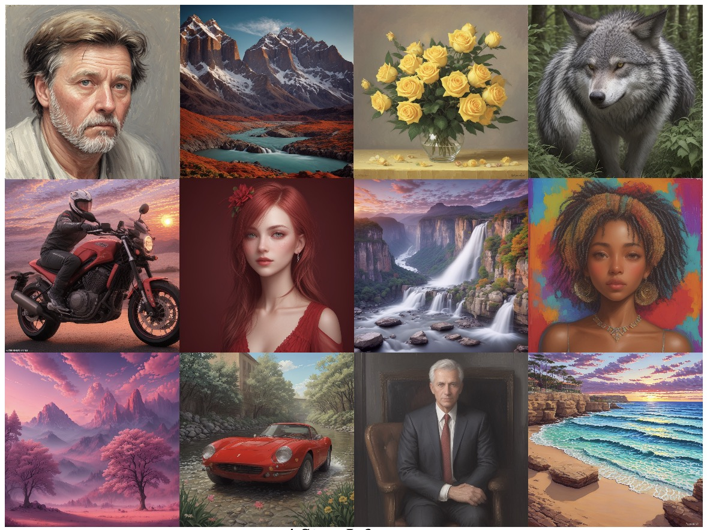
Simian Luo, Yiqin Tan, Longbo Huang, Jian Li, Hang Zhao
"Generating high-resolution images in only 2-4 steps!"
LCM-LoRA: A Universal Stable-Diffusion Acceleration Module
Simian Luo, Yiqin Tan, Suraj Patil, Daniel Gu, Patrick von Platen, Apolinário Passos,
Longbo Huang, Jian Li, Hang Zhao
"Accelerating your LoRA model by 5x without training!"
LCM Paper LCM-LoRA Report Demo Project
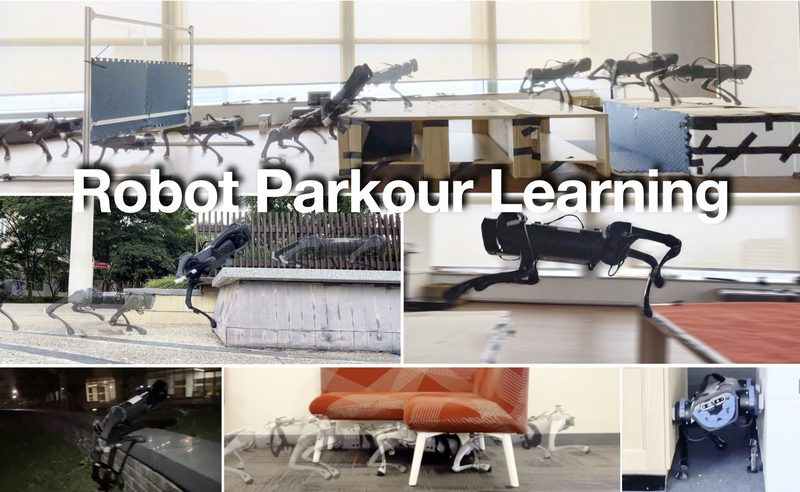
Ziwen Zhuang, Zipeng Fu, Jianren Wang, Christopher G Atkeson, Sören Schwertfeger,
Chelsea Finn, Hang Zhao
CoRL 2023 Oral Best System Paper Finalist (Top 3)
"Robot parkour skills empowered by onboard vision and a neural network!"
Paper Code Project
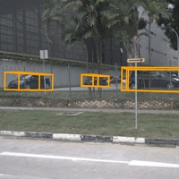
Yue Wang, Vitor Campagnolo Guizilini, Tianyuan Zhang, Yilun Wang, Hang Zhao, Justin Solomon
CoRL 2021
"A new paradigm of 3D object detection from 2D images!"
Paper
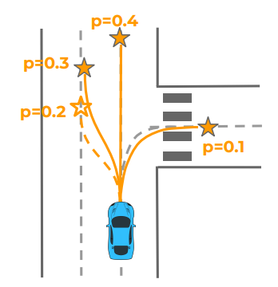
Hang Zhao, Jiyang Gao, Tian Lan, Chen Sun, Benjamin Sapp,
Balakrishnan Varadarajan, Yue Shen, Yi Shen, Yuning Chai,
Cordelia Schmid, Congcong Li, Dragomir Anguelov
CoRL 2020
"A new motion prediction framework for self-driving!"
Paper
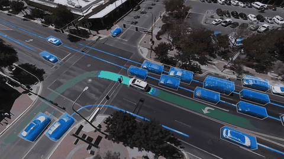
Jiyang Gao, Chen Sun, Hang Zhao, Yi Shen,
Dragomir Anguelov, Congcong Li, Cordelia Schmid
CVPR 2020
Paper Waymo Blog
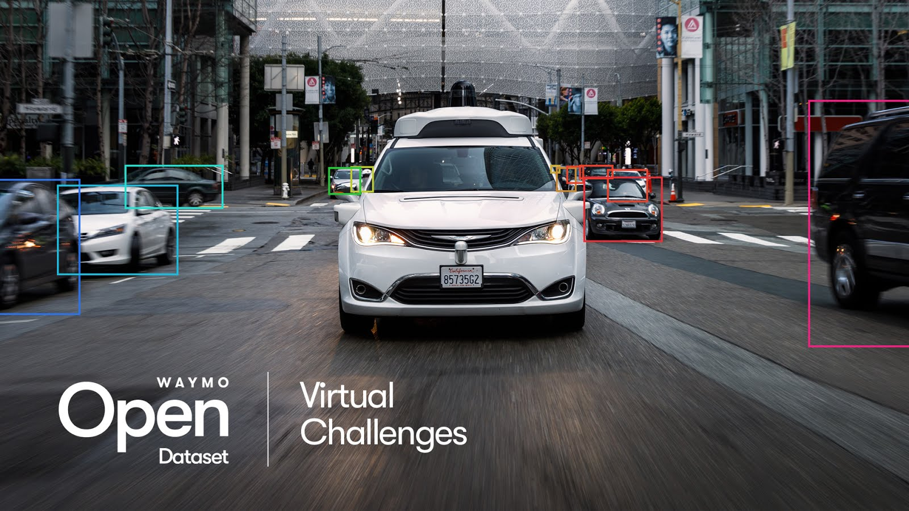
Pei Sun et al.
CVPR 2020
Large Scale Interactive Motion Forecasting for Autonomous Driving: The Waymo Open Motion Dataset
Scott Ettinger, et al.
ICCV 2021 Oral
CVPR Paper ICCV Paper Project Page Challenges Waymo Blog
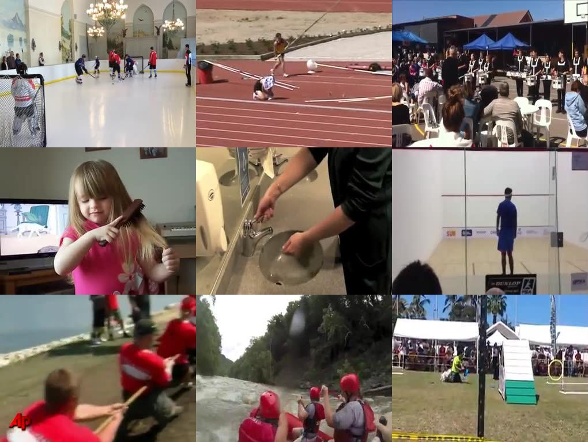
Hang Zhao, Zhicheng Yan, Lorenzo Torresani, Antonio Torralba
ICCV 2019
"A large-scale dataset for temporal action localization and recognition."
Paper (arXiv) Project Page GitHub Page
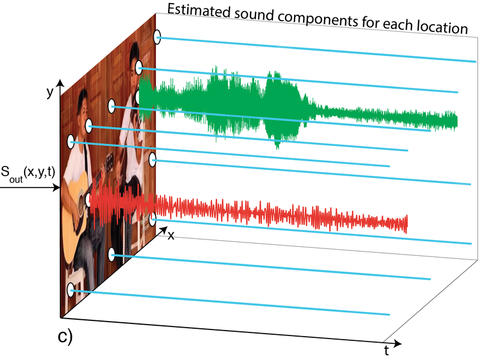
Hang Zhao, Chuang Gan, Andrew Rouditchenko, Carl Vondrick, Josh McDermott, Antonio Torralba
ECCV 2018
"Listen to the sound of pixels!"
Paper (arXiv) Project Page Code News Coverage
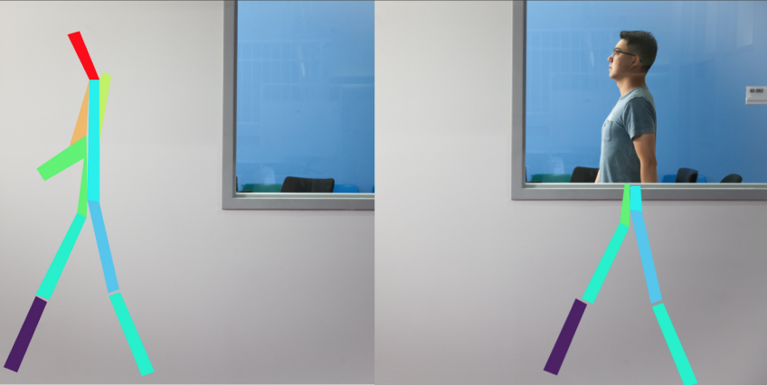
Mingmin Zhao, Tianhong Li, Mohammad Alsheikh, Yonglong Tian, Hang Zhao,
Antonio Torralba, Dina Katabi
CVPR 2018
Paper Project Page News Coverage
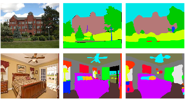
Bolei Zhou, Hang Zhao, Xavier Puig, Sanja Fidler, Adela Barriuso, Antonio Torralba
CVPR 2017
Semantic Understanding of Scenes through the ADE20K Dataset
Bolei Zhou, Hang Zhao, Xavier Puig, Tete Xiao, Sanja Fidler, Adela Barriuso, Antonio Torralba
IJCV 2018 ILSVRC'16 MIT Scene Parsing Challenge
"I co-organized the scene parsing challenge at ILSVRC'16. Check out our dataset now!"
CVPR Paper IJCV Paper Dataset Code Benchmark Challenge
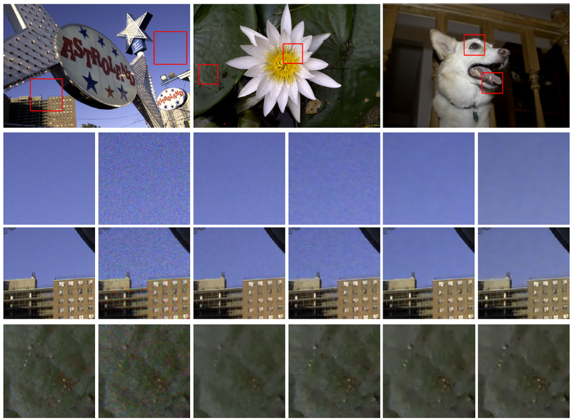
Loss Functions for Neural Networks for Image Processing
Hang Zhao, Orazio Gallo, Iuri Frosio and Jan Kautz
arXiv:1511.08861
TCI 2017
"How important are loss functions for image processing tasks
in deep neural nets?"
Paper (Journal)
Paper (arXiv)
Project Page
Code
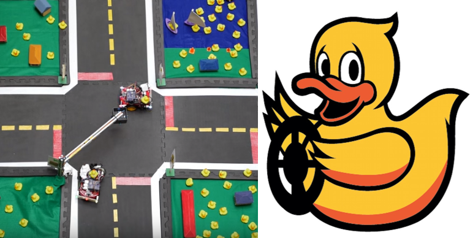
Duckietown: an Open, Inexpensive and Flexible Platform for
Autonomy Education and Research
ICRA 2017
"We are building an open-source education and research
platform for autonomous driving. "
Paper
Video
Project Page
Code
News Coverage
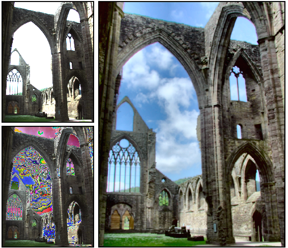
Unbounded High Dynamic Range Photography using a Modulo Camera
Hang Zhao, Boxin Shi, Christy Fernandez-Cull, Sai-Kit Yeung and
Ramesh Raskar
ICCP 2015
Oral Presentation [Best Paper runner-up]
Paper
Poster
Video
Project Page
News Coverage
{kind=link}
Teaching
- [Tsinghua] Advances in Autonomous Driving and Intelligent Vehicles (Lecturer)
- [Tsinghua] Introduction to Multimedia Computing (Lecturer)
- [MIT 6.869] Advances in Computer Vision (Teaching Assistant)
- [MIT 2.166] Autonomous Vehicles, also known as "Duckietown" (Course Developer, Teaching Assistant)
- [MIT 6.870] Smartphone Vision (Teaching Assistant)
- [MIT 2.007] Design and Manufacturing I (Teaching Assistant)
Professional Activities
- Co-organizer of Workshop on Sight and Sound at CVPR 2026.
- Co-organizer of Workshop on Sight and Sound at CVPR 2025.
- Co-organizer of Workshop on Vision-Centric Autonomous Driving (VCAD) at ECCV 2024.
- Co-organizer of Workshop on Vision and Language for Autonomous Driving and Robotics at CVPR 2024.
- Co-organizer of Workshop on Sight and Sound at CVPR 2024.
- Co-organizer of Workshop on Vision-Centric Autonomous Driving (VCAD) at CVPR 2023.
- Co-organizer of Workshop on Sight and Sound at CVPR 2023.
- Workshop co-chair (organizing committee) of ICLR 2023.
- Co-organizer of Workshop on Sight and Sound at CVPR 2022.
- Co-organizer of HACS Temporal Action Localization Challenge at Workshop on International Challenge on Activity Recognition at CVPR 2020.
- Co-organizer of Workshop on Sight and Sound at CVPR 2020.
- Co-organizer of Workshop on Multi-modal Video Analysis and Moments in Time Challenge at ICCV 2019.
- Co-organizer of Weakly Supervised Learning for Real-World Computer Vision Applications and the 1st Learning from Imperfect Data (LID) Challenge at CVPR 2019.
- Co-organizer of Places Challenge 2017.
- Co-organizer of Joint COCO and Places Recognition Challenge Workshop at ICCV 2017.
- Co-organizer of MIT Scene Parsing Challenge 2016.
- Co-organizer of ILSVRC'16 challenge workshop at ECCV 2016.
- Journal reviewer for TPAMI, IJCV, TIP, CVIU, TCI, OE, etc.
- Conference reviewer for CVPR, ICCV, ECCV, NIPS, ICML, ICLR, etc.
- Co-chair of MIT Vision Seminar.
Talks
- Invited talk at RSS 2026 Workshop on Semantic Reasoning and Goal Understanding in Robotics, Jul 2026.
- Invited talk at ICCV Workshop on Human-Robot-Scene Interaction and Collaboration, Oct 2025.
- Keynote speech at CoRL 2025, Sep 2025.
- Invited talk at CoRL Workshop on Robotics World Modeling, Sep 2025.
- Invited talk at ECCV Workshop on Autonomous Vehicles Meet Multimodal Foundation Models, Oct 2024.
- Invited talk at ICCV Workshop on Visual Learning of Sounds in Spaces (AV4D), Oct 2023.
- Invited talk at CVPR Workshop on Autonomous Driving (WAD), Jun 2023.
- Invited talk at VALSE Workshop on Autonomous Driving, Jun 2023.
- Invited talk at ICLR Workshop on Representation for Autonomous Driving, May 2023.
- Invited talk at NeurIPS Workshop on Machine Learning for Autonomous Driving (ML4AD), Dec 2022.
- Invited talk at IROS Workshop on Behavior-Driven Autonomous Driving in Unstructured Environments, Oct 2022.
- Invited talk at CVPR Tutorial on OpenMMLab, Jun 2022.
- Invited talk at VALSE APR on Autonomous Driving, Jun 2022.
- Invited talk at VALSE Workshop on Multimodal Learning, Jun 2022.
- Invited talk at ICCV Workshop on Benchmarking Trajectory Forecasting Models, Oct 2021.
- Invited talk at CVPR Workshop on Autonomous Driving, Jun 2021.
- Invited talk at Samsung Research Lab (UK), Apr 2021.
- Invited talk at Amazon Alexa, May 2019.
- Invited talk at Samsung Workshop at MIT, Apr 2019.
- Invited talk at Machine Intelligence Conference, Mar 2019.
- Invited talk at Philips, Feb 2019.
- Invited talk at VALSE, Jun 2018.
- Invited talk at Harvard Vision Seminar, May 2018.
- Invited talk at Google Cambridge, Apr 2018.
- Invited talk at MIT Graphics Seminar, Sep 2015.
In Chinese:
- Invited talk at TechBeat on BEV Perception for Vision-Centric Autonomous Driving, Mar 2022. [Recording]
- Invited talk at TechBeat on Motion Prediction for Autonomous Driving, Dec 2020. [Recording]
- Invited talk at TechBeat on Cross-Modal Audio-Visual Self-Supervised Learning, Jun 2018. [Recording]